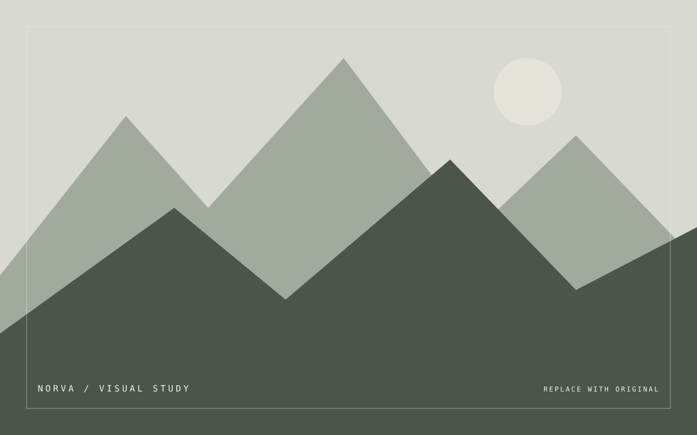

FIELD NOTES / 01—03
Notes from
elsewhere.
Places, people and moments beyond the studio.

01 / PLACE & CULTURE
Himalayan Notes
Field observations from mountain regions, cultural landscapes and everyday life. Original photographs and notes will replace this study.

02 / PEOPLE
People & Encounters
Portraits, conversations and encounters shaped by place and time.

03 / OBSERVATION
Places & Moments
Fragments of travel, architecture, landscape and the passing moment.
All imagery on this page is temporary and will be replaced with original field material.